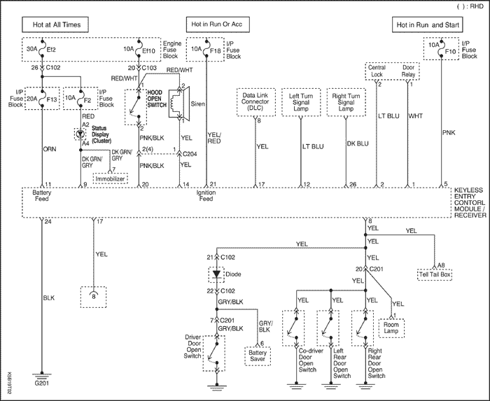
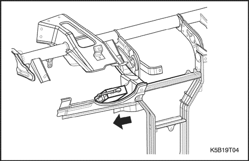

SECCIÓN 9T1
MANDO A DISTANCIA DE LAS PUERTAS Y SISTEMA ANTIRROBO
Precaución: Desconecte el cable negativo de la batería antes de desmontar o instalar cualquier unidad eléctrica o cuando exista la posibilidad de que una herramienta o equipo pueda entrar en contacto con bornes eléctricos expuestos. La desconexión de dicho cable ayudará a evitar lesiones personales y daños al vehículo. La llave de contacto debe estar en posición LOCK a menos que se indique lo contrario.
ESPECIFICACIONES
Especificaciones de apriete de la sujeción
Aplicación | N•m | Lb-pie | Lb-pulg. |
Tornillo de fijación de la sirena | 8 | 16 | - |
ESQUEMAS Y DIAGRAMAS DE CABLEADO
Mando a distancia de las puertas y sistema antirrobo (sin inmovilizador)



Conector del módulo/receptor de control
Terminal | Color | Descripción |
1 | BCO | Relé de bloqueo centralizado de puertas |
2 | AZL CL | Relé de bloqueo centralizado de puertas |
3 | - | - |
4 | - | - |
5 | RSA | Fusible P/I F10 |
6 | - | - |
7 | - | - |
8 | AMA | Interruptor del contacto de la puerta |
9 | VER OS/GRIS | Panel de instrumentos (visualización de estado) |
10 | - | - |
11 | ROJ/AZL OS | Fusible P/I F4 |
12 | AZL CL | Intermitente (IZQ) |
13 | - | - |
14 | AMA | Sirena |
15 | - | - |
16 | - | - |
17 | AMA | Comunicación de diagnóstico (DLC) |
18 | - | - |
19 | - | - |
20 | RSA/NGR | Interruptor de apertura del capó |
21 | ROJ/AMA | Fusible P/I F18 |
22 | - | - |
23 | - | - |
24 | NGR | Masa |
25 | - | - |
26 | AZL OS | Intermitente (DCHA) |
MANTENIMIENTO Y REPARACIÓN
SERVICIO EN EL VEHÍCULO

Módulo/receptor de control
Procedimiento de desmontaje
- Desconecte el cable negativo de la batería.
- Desenchufe el conector eléctrico del módulo/receptor de control.
- Desprenda el módulo/receptor de control deslizándolo de su soporte de fijación.
Procedimiento de montaje
- Monte el módulo/receptor de control en su soporte de fijación.
- Enchufe el conector eléctrico del módulo/receptor de control.
- Conecte el cable negativo de la batería.
Programación del transmisor del mando a distancia de las puertas
El sistema de mando a distancia de las puertas admite la utilización de hasta cinco (5) transmisores para cada vehículo. Los transmisores de repuesto del sistema de mando a distancia de las puertas para un vehículo concreto deben programarse antes con la ayuda del scanner Scan 100.
Este proceso se realiza gracias a la comunicación de datos serie entre el scanner Scan 100 y la unidad de control del mando a distancia de las puertas, siendo el único método disponible para programar los transmisores.
Aviso: Todos los transmisores para un determinado vehículo deben programarse al mismo tiempo.
Aviso: Una vez activada la función de programación del sistema de mando a distancia de las puertas, cualquier transmisor (existente o nuevo) que no se programe (o reprograme) durante el proceso de programación ya no servirá para el sistema de mando a distancia de las puertas de dicho vehículo.
Aviso: Antes de iniciar el procedimiento de programación, asegúrese de que las puertas, el capó y el maletero/portón trasero estén cerrados.
- Conecte el scanner Scan 100 al conector de diagnóstico (DLC).
- Encienda el scanner 100 Scan Tool pulsando el botón de encendido, a continuación, espere que aparezca la pantalla del menú principal (MAIN MENU).
- En la pantalla del menú principal, seleccione diagnóstico ("Diagnostics") pulsando el nº 1 en el teclado.
- En la pantalla del año del modelo (MODEL YEAR), seleccione el año del modelo en cuestión, desplácese para ello hasta el año y pulse "ENTER" o pulse el número correspondiente en el teclado.
- En la pantalla de tipo de vehículo (VEHICLE TYPE), seleccione el modelo del vehículo en cuestión, desplácese para ello hasta el nombre del modelo y pulse "ENTER" o pulse el número correspondiente en el teclado.
- En la pantalla de tipo de vehículo (VEHICLE TYPE), seleccione el modelo del vehículo en cuestión, desplácese para ello hasta el nombre del modelo y pulse "ENTER" o pulse el número correspondiente en el teclado.
- En la pantalla del menú de selección del sistema (SYSTEM SELECTION MENU), seleccione carrocería ("Body") pulsando el nº 2 en el teclado.
- En la pantalla del menú de selección de la carrocería (BODY SELECTION MENU), seleccione codificación ("Coding") pulsando el nº 2 en el teclado.
- En la pantalla del menú de selección del código (CODY SELECTION MENU), seleccione codificación ("Coding") pulsando el nº 1 en el teclado.
- En la pantalla del número secreto de codificación (SECRET NUMBER OF CODINGS), introduzca cuatro (4) ceros (0-0-0-0) en las cuatro (4) casillas con las etiquetas "1-2-3-4-".
- En la pantalla de la selección del sistema de codificación (CODING SYSTEM SELECT), seleccione mando a distancia ("Keyless Entry") pulsando el nº 2 en el teclado.
Aviso: Puede producirse una pequeña demora y aparecer el mensaje "PLEASE WAIT" (Espere por favor...) antes de que se muestre la siguiente pantalla.
- En la pantalla del sistema de codificación del mando a distancia (KEYLESS ENTRY CODING SYSTEM), seleccione codificación del transmisor ("Coding Transmitter") pulsando el nº 1 en el teclado.
- Cuando en la programación utilice el scanner Scan 100, pulse cualquier botón del primer transmisor que vaya a programarse.
Precaución: Asegúrese de que los transmisores de otros vehículos cercanos no se activen durante este procedimiento.
- Continúe con la programación de transmisores cuando se realice mediante el scanner Scan 100 hasta que termine de programarlos todos.
Aviso: Puede programarse un máximo de cinco (5) transmisores para el mismo vehículo.
- Una vez programados todos los transmisores, pulse el botón "ESC" en el teclado. La pantalla confirmará el número de transmisores programados. Si el número mostrado no coincide con el número de transmisores programados, repita el procedimiento.
- Espere aproximadamente 10 segundos y luego compruebe si funcionan correctamente todos los transmisores programados.
El módulo/receptor de control abandona automáticamente el modo de programación y pasa al modo de funcionamiento normal cuando ocurre una de las condiciones siguientes:
- El scanner está desconectado del ALDL.
- Han sido registradas cinco contraseñas en el módulo/receptor de control.
DESCRIPCIÓN GENERAL Y FUNCIONAMIENTO DEL SISTEMA
Cierre y apertura a distancia
El transmisor -portátil bloquea y desbloquea las puertas del vehículo enviando señales radioeléctricas al módulo/receptor de control en el vehículo. El radio de acción efectivo del transmisor oscila entre 5 y 10 metros (aproximadamente entre 16 y 32 pies), dependiendo de si hay objetos tales como otros vehículos bloqueando el camino de las ondas radioeléctricas.
El transmisor dispone de un botón LOCK (bloqueo) y de un botón UNLOCK (desbloqueo) que sólo funcionan con la llave de contacto en la posición OFF. Pulsar el botón UNLOCK tiene los siguientes efectos: Pulsar el botón UNLOCK tiene los siguientes efectos:
- Se desbloquean las puertas.
- Los intermitentes dan dos destellos.
- Se desactiva el módulo de control.
Al apretar el botón de bloqueo ocurre lo siguiente:
- Se bloquean las puertas.
- Los intermitentes dan un destello.
- Se activa el módulo de control.
El transmisor dispone de una pila reemplazable. La pila está diseñada para durar al menos dos años antes de que sea necesario sustituirla.
Localizador del vehículo
El sistema de mando a distancia de las puertas ayuda al conductor a localizar del vehículo. Cuando se desbloquea el vehículo con el mando a distancia, los intermitentes parpadean dos veces para indicar la posición del vehículo. La duración de los destellos y el espacio de tiempo entre destellos se usa para indicar ciertos estados del vehículo. Consulte el apartado
"Indicación de avería o alarma" de esta sección.
Cierre automático (seguro)
El mando a distancia de las puertas tiene un control de autobloqueo. Si se desbloquean las puertas con el transmisor remoto estando el módulo/receptor de control en el modo activo, las puertas se vuelven a bloquear automáticamente al cabo - de 30 segundos a menos que ocurra uno de los siguientes hechos:
- Se abre la puerta.
- Se gire la llave de contacto a la posición ON.
- Se abra el portón trasero.
- Se abra el capó.
Módulo/receptor de control
El módulo/receptor de control del mando a distancia de las puertas se encuentra en el centro de la barra de anclaje. El módulo/receptor de control procesa las señales del transmisor remoto y de los sensores de intrusión y activa la alarma si se detecta una intrusión.
El módulo/receptor de control no comunicará con los transmisores de otros vehículos debido a que hay más de cuatro mil millones de combinaciones electrónicas de contraseña posibles y éstas no se repiten. El módulo/receptor de control tiene una antena incorporada para detectar las señales del transmisor.
indicación de avería o alarma
Cuando se pulsa el botón de desbloqueo en el transmisor a distancia, el módulo/receptor de control hará parpadear las luces de aparcamiento a fin de informar sobre el mando a distancia de las puertas y el sistema - antirrobo.
Situación de normalidad: Si no ha habido una intrusión y no se ha detectado ninguna avería, el módulo/receptor de control indicará una situación de normalidad cuando se oprima el botón de desbloqueo (UNLOCK). Las luces de aparcamiento parpadearán dos veces durante 0,5 segundos con una pausa de 0,5 segundos entre destellos.
Indicación de avería: Si hay una avería en el mando a distancia de las puertas y sistema - antirrobo, el módulo/receptor de control señalizará la avería cuando se oprima el botón de desbloqueo (UNLOCK). Las luces de aparcamiento parpadearán dos veces durante 1 segundo con una pausa de 0,5 segundos entre destellos.
Indicación de alarma: Si ha habido alguna intrusión desde la última vez que se apretó el botón de bloqueo (LOCK), cuando se pulse el botón de desbloqueo (UNLOCK), el módulo/receptor de control indicará que hubo una intrusión. Las luces de aparcamiento parpadearán dos veces durante 0,5 segundos con una pausa de 1,5 segundos entre los destellos.
La información sobre averías y alarmas se borrará la próxima vez que el transmisor, al enviar el mensaje de bloqueo, active el módulo/receptor del control.